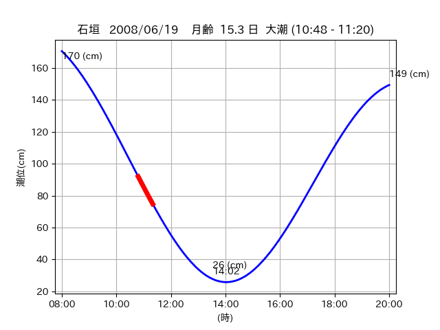

<!DOCTYPE html>
<html>
<head>
    
    <meta http-equiv="content-type" content="text/html; charset=UTF-8" />
    
        <script>
            L_NO_TOUCH = false;
            L_DISABLE_3D = false;
        </script>
    
    <style>html, body {width: 100%;height: 100%;margin: 0;padding: 0;}</style>
    <style>#map {position:absolute;top:0;bottom:0;right:0;left:0;}</style>
    <script src="https://cdn.jsdelivr.net/npm/leaflet@1.9.3/dist/leaflet.js"></script>
    <script src="https://code.jquery.com/jquery-3.7.1.min.js"></script>
    <script src="https://cdn.jsdelivr.net/npm/bootstrap@5.2.2/dist/js/bootstrap.bundle.min.js"></script>
    <script src="https://cdnjs.cloudflare.com/ajax/libs/Leaflet.awesome-markers/2.0.2/leaflet.awesome-markers.js"></script>
    <link rel="stylesheet" href="https://cdn.jsdelivr.net/npm/leaflet@1.9.3/dist/leaflet.css"/>
    <link rel="stylesheet" href="https://cdn.jsdelivr.net/npm/bootstrap@5.2.2/dist/css/bootstrap.min.css"/>
    <link rel="stylesheet" href="https://netdna.bootstrapcdn.com/bootstrap/3.0.0/css/bootstrap-glyphicons.css"/>
    <link rel="stylesheet" href="https://cdn.jsdelivr.net/npm/@fortawesome/fontawesome-free@6.2.0/css/all.min.css"/>
    <link rel="stylesheet" href="https://cdnjs.cloudflare.com/ajax/libs/Leaflet.awesome-markers/2.0.2/leaflet.awesome-markers.css"/>
    <link rel="stylesheet" href="https://cdn.jsdelivr.net/gh/python-visualization/folium/folium/templates/leaflet.awesome.rotate.min.css"/>
    
            <meta name="viewport" content="width=device-width,
                initial-scale=1.0, maximum-scale=1.0, user-scalable=no" />
            <style>
                #map_27b14c4f92b45d3b12c8da27a4fb84b9 {
                    position: relative;
                    width: 2048.0px;
                    height: 1600.0px;
                    left: 0.0%;
                    top: 0.0%;
                }
                .leaflet-container { font-size: 1rem; }
            </style>
        
</head>
<body>
    
    
            <div class="folium-map" id="map_27b14c4f92b45d3b12c8da27a4fb84b9" ></div>
        
</body>
<script>
    
    
            var map_27b14c4f92b45d3b12c8da27a4fb84b9 = L.map(
                "map_27b14c4f92b45d3b12c8da27a4fb84b9",
                {
                    center: [24.36, 123.95],
                    crs: L.CRS.EPSG3857,
                    ...{
  "zoom": 12,
  "zoomControl": true,
  "preferCanvas": false,
}

                }
            );

            

        
    
            var tile_layer_4c886d89f8d0a1cc07df8a09ef333715 = L.tileLayer(
                "https://cyberjapandata.gsi.go.jp/xyz/seamlessphoto/{z}/{x}/{y}.jpg",
                {
  "minZoom": 0,
  "maxZoom": 18,
  "maxNativeZoom": 18,
  "noWrap": false,
  "attribution": "\u5730\u7406\u9662\u5730\u56f3",
  "subdomains": "abc",
  "detectRetina": false,
  "tms": false,
  "opacity": 1,
}

            );
        
    
            tile_layer_4c886d89f8d0a1cc07df8a09ef333715.addTo(map_27b14c4f92b45d3b12c8da27a4fb84b9);
        
    
            var marker_11845e33ba243d34f1e5d32a39a1b273 = L.marker(
                [24.3726, 123.9498],
                {
}
            ).addTo(map_27b14c4f92b45d3b12c8da27a4fb84b9);
        
    
            var icon_7dfeb60c8260adcee275c426acb2e216 = L.AwesomeMarkers.icon(
                {
  "markerColor": "orange",
  "iconColor": "white",
  "icon": "info-sign",
  "prefix": "glyphicon",
  "extraClasses": "fa-rotate-0",
}
            );
        
    
        var popup_07d86c2f4df177409b78ed025ce6e315 = L.popup({
  "maxWidth": "100%",
});

        
            
                var html_47781256ef5c2289947c91443680f194 = $(`<div id="html_47781256ef5c2289947c91443680f194" style="width: 100.0%; height: 100.0%;"><table><tr><td></td></tr><tr><td><center>20080619 No.1 </center></table></td></tr></table</div>`)[0];
                popup_07d86c2f4df177409b78ed025ce6e315.setContent(html_47781256ef5c2289947c91443680f194);
            
        

        marker_11845e33ba243d34f1e5d32a39a1b273.bindPopup(popup_07d86c2f4df177409b78ed025ce6e315)
        ;

        
    
    
                marker_11845e33ba243d34f1e5d32a39a1b273.setIcon(icon_7dfeb60c8260adcee275c426acb2e216);
            
    
            var poly_line_dab6bb3ef5a284418fee9a5d4a2fbbc7 = L.polyline(
                [[24.3726, 123.9498], [24.3736, 123.9545]],
                {"bubblingMouseEvents": true, "color": "#FF00FF", "dashArray": null, "dashOffset": null, "fill": false, "fillColor": "#FF00FF", "fillOpacity": 0.2, "fillRule": "evenodd", "lineCap": "round", "lineJoin": "round", "noClip": false, "opacity": 1.0, "smoothFactor": 1.0, "stroke": true, "weight": 3}
            ).addTo(map_27b14c4f92b45d3b12c8da27a4fb84b9);
        
    
            var marker_2335ff3c4f1ec55ca7f1f132b28d0ca7 = L.marker(
                [24.3852, 123.9356],
                {
}
            ).addTo(map_27b14c4f92b45d3b12c8da27a4fb84b9);
        
    
            var icon_a39245de3ba0bde8a6e98958bc890549 = L.AwesomeMarkers.icon(
                {
  "markerColor": "orange",
  "iconColor": "white",
  "icon": "info-sign",
  "prefix": "glyphicon",
  "extraClasses": "fa-rotate-0",
}
            );
        
    
        var popup_ac2b02a9ad650f6aecf0a33233716406 = L.popup({
  "maxWidth": "100%",
});

        
            
                var html_fd4f680ad299cc50e1c48710732fa734 = $(`<div id="html_fd4f680ad299cc50e1c48710732fa734" style="width: 100.0%; height: 100.0%;"><table><tr><td></td></tr><tr><td><center>20080619 No.2 </center></table></td></tr></table</div>`)[0];
                popup_ac2b02a9ad650f6aecf0a33233716406.setContent(html_fd4f680ad299cc50e1c48710732fa734);
            
        

        marker_2335ff3c4f1ec55ca7f1f132b28d0ca7.bindPopup(popup_ac2b02a9ad650f6aecf0a33233716406)
        ;

        
    
    
                marker_2335ff3c4f1ec55ca7f1f132b28d0ca7.setIcon(icon_a39245de3ba0bde8a6e98958bc890549);
            
    
            var poly_line_c9526f3b9540ab402753a23f4027ee22 = L.polyline(
                [[24.3852, 123.9356], [24.3825, 123.9394]],
                {"bubblingMouseEvents": true, "color": "#00FFFF", "dashArray": null, "dashOffset": null, "fill": false, "fillColor": "#00FFFF", "fillOpacity": 0.2, "fillRule": "evenodd", "lineCap": "round", "lineJoin": "round", "noClip": false, "opacity": 1.0, "smoothFactor": 1.0, "stroke": true, "weight": 3}
            ).addTo(map_27b14c4f92b45d3b12c8da27a4fb84b9);
        
    
            var marker_d301386beae6dd0853b2f0302a8b4295 = L.marker(
                [24.3632, 123.9506],
                {
}
            ).addTo(map_27b14c4f92b45d3b12c8da27a4fb84b9);
        
    
            var icon_cb034fcd47fa523f70f50677a8138ad2 = L.AwesomeMarkers.icon(
                {
  "markerColor": "orange",
  "iconColor": "white",
  "icon": "info-sign",
  "prefix": "glyphicon",
  "extraClasses": "fa-rotate-0",
}
            );
        
    
        var popup_7597b0a4112389761c450f600cc4436d = L.popup({
  "maxWidth": "100%",
});

        
            
                var html_13a7f32e0aef7cb2958c90245408fb64 = $(`<div id="html_13a7f32e0aef7cb2958c90245408fb64" style="width: 100.0%; height: 100.0%;"><table><tr><td></td></tr><tr><td><center>20080619 No.3 </center></table></td></tr></table</div>`)[0];
                popup_7597b0a4112389761c450f600cc4436d.setContent(html_13a7f32e0aef7cb2958c90245408fb64);
            
        

        marker_d301386beae6dd0853b2f0302a8b4295.bindPopup(popup_7597b0a4112389761c450f600cc4436d)
        ;

        
    
    
                marker_d301386beae6dd0853b2f0302a8b4295.setIcon(icon_cb034fcd47fa523f70f50677a8138ad2);
            
    
            var poly_line_b274322b7d583150351b8f98116a24fd = L.polyline(
                [[24.3632, 123.9506], [24.3567, 123.9493]],
                {"bubblingMouseEvents": true, "color": "#00FFFF", "dashArray": null, "dashOffset": null, "fill": false, "fillColor": "#00FFFF", "fillOpacity": 0.2, "fillRule": "evenodd", "lineCap": "round", "lineJoin": "round", "noClip": false, "opacity": 1.0, "smoothFactor": 1.0, "stroke": true, "weight": 3}
            ).addTo(map_27b14c4f92b45d3b12c8da27a4fb84b9);
        
</script>
</html>